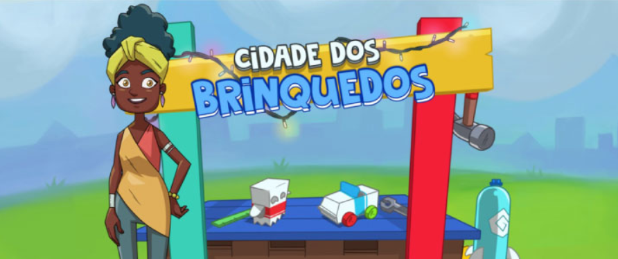

Cidade dos brinquedos
O que é o jogo Cidade dos brinquedos?
“Quer fazer com que todas as crianças da sua comunidade tenham brinquedos para brincar com você? Utilize objetos reciclados para fazer foguetes, robôs, carros e muito mais! Selecione os objetos que sobrarem e monte seus próprios brinquedos. E que tal mostrar seu talento para todo mundo? No fim do dia, apresente suas criações na grande exposição de brinquedos!” - Sebrae
Cidade dos brinquedos
O que é o jogo Cidade dos brinquedos?
“Quer fazer com que todas as crianças da sua comunidade tenham brinquedos para brincar com você? Utilize objetos reciclados para fazer foguetes, robôs, carros e muito mais! Selecione os objetos que sobrarem e monte seus próprios brinquedos. E que tal mostrar seu talento para todo mundo? No fim do dia, apresente suas criações na grande exposição de brinquedos!” - Sebrae
Antes precisamos saber o que são jogos empresariais, segundo tantantan, os jogos garantem um melhor aprendizado e treinamento das habilidades por meio de uma metodologia de simulação que interage com situações definidas pelos participantes, saindo da teoria e, literalmente, pondo a mão na massa. Seu principal objetivo é proporcionar ao jogador um laboratório para testar seus conhecimentos e competências na prática, agregando novas perspectivas.
Pontos positivos
Criatividade nas possibilidades de elaboração de brinquedos, não apresentando um clichê do que pode ser produzido com material reciclável e dos materiais a serem usados em sua composição, consequentemente.
Pontos negativos
Ausência de instruções claras e objetivas
Para o norteamento do jogador, com detalhamentos simples e nítidos (por conta disso, o jogo não é intuitivo).